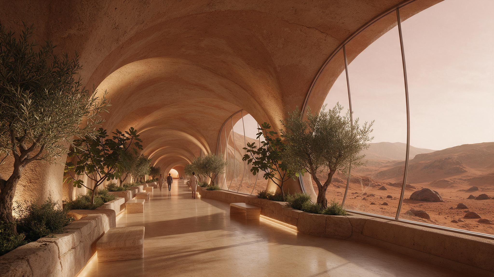

The Promenade
Nine hundred metres,
and no helmet.
Every residence connects to a single pressurised spine that runs the length of the settlement. It is planted like a street, not plumbed like a tunnel — olive, fig and bay in recessed stone beds, benches in the wide parts, and a continuous glass wall holding back the valley. It is where the community actually happens: the walk to dinner, the argument about the water budget, the children who never learned that corridors are supposed to be dull.
- Length
- 900 m
- Pressure
- 1 atm
- Planting
- 340 trees
- Connects
- All 24